1111 SOP非正式教學網
本區寫給行政助理
- 正職請至總管首頁填寫新人單、並於同頁查詢進度。
- 駐點人員:請將基本資料寄信通知人事建檔、獲得員工編號後再申請新人單、並告知護士做健檢
- 約聘依合約為主。
- 職稱變更:請主管寫信告知人事變更；換位子、樓層等填設備異動單。
- 報到日:8/3
- 姓名:林O煜
- 部門:總管理處-其他
- 職稱:工程師
- 身分證字號: F12OOOOO
- 生日: 1986-11-XX
- 電話: 0935-XXXXXX
- 座位分機 2725
- 嘗試收尋小薰【2721】
新人分三種
新進人員帳號申請
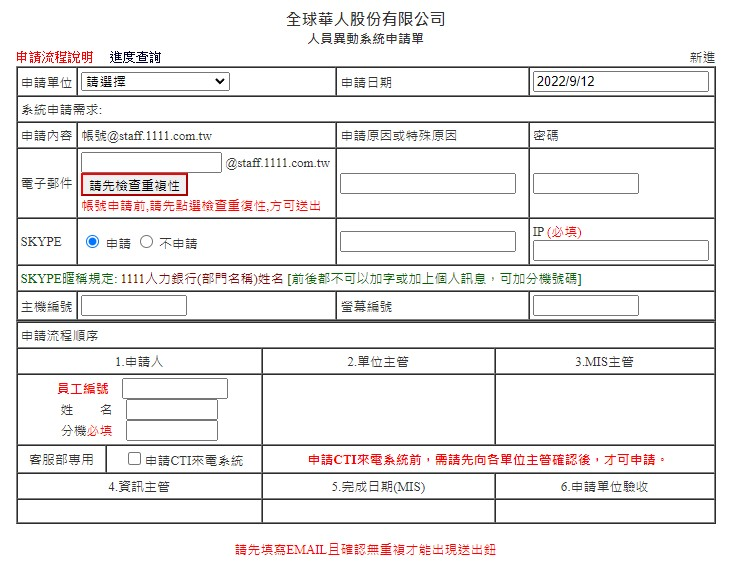新進人員簽核進度
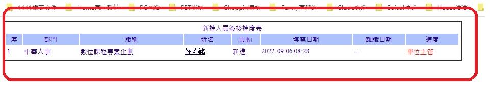駐點新人帳號申請
注意事項
約聘人員需要有(公司對公司)合約若是個人顧問合約(公司對個人帳戶)需提供合約與勞務單
勞務單:切結書(按我下載)
約聘人員皆為紙本打卡、出勤不走人事
工單若不能點功能、或選主管請找工程部加權限
*請全部複製給人事建擋
其他設定
*請將SKYPE的收尋打開 以利同事收尋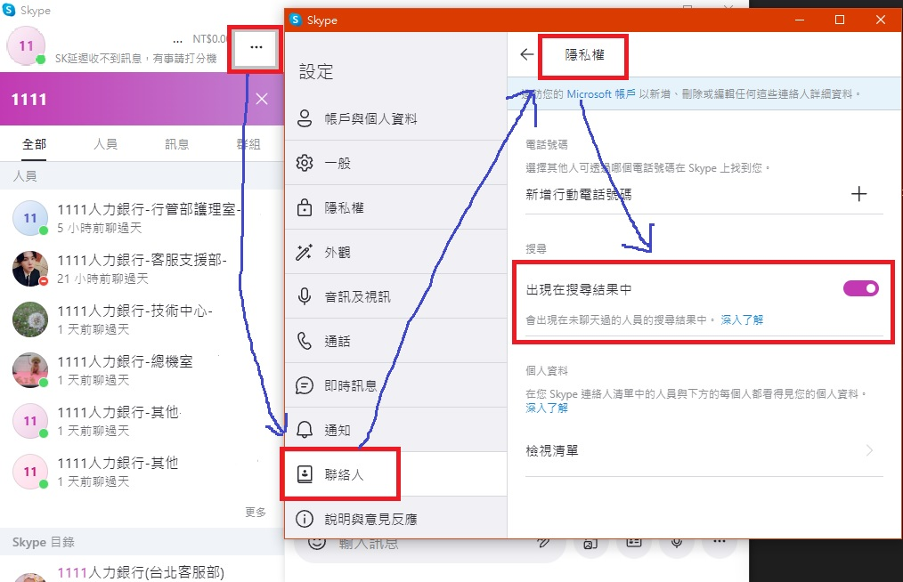
設備異動申請
- 可安裝什麼軟體是根據您的職務Free Ware 之安裝。
- 若您要使用版權軟體，如Dreamweaver、Photoshop等，貴部門必須支付此軟體費用；費用可詢問MIS。
- 總管系統權限請上程式設計申請單
- 主管都有權簽單，所以不是自己部下不要亂簽核
- 安裝開源軟體:LINE、Visual Studio Code、VPM
- 攜帶筆電:填畢後繳交切結書給MIS主管
- 申請VPN:(延伸:轉信設定)
- 事務機申請:比如彩雷申請(因為費用分攤)
- 設備調撥部門、換位子:如、樓層別置換對應ip就必需更換、或調撥資產設備
- 經MIS報修後的硬體設備升級:申請雙螢幕、升級記憶體
- WIFI申請:查詢自己行動裝置mac address回報設定、如果更換手機、需再寫一次設備單、但標註為更換行動裝置
- 1.開源程式一類、2.本機Admin一類3.LINE一類、4.購物網站一類、5.WIFI一類6.評估過後的硬體設備升級
- 申請原因請簡述10字.不可寫業務需求過於簡短
- 另.非工程人員IP不可吃8網段
- SQL Server Management Studio
https://docs.microsoft.com/zh-tw/sql/ssms/download-sql-server-management-studio-ssms?view=sql-server-ver16 - SQL Server 2019
Developer
https://www.microsoft.com/zh-tw/sql-server/sql-server-downloads - Git
https://git-scm.com/downloads - Sourcetree
https://www.sourcetreeapp.com/ - FileZilla
https://filezilla-project.org/download.php?platform=win64 - Postman
https://www.postman.com/downloads/ - Winmerge
https://winmerge.org/downloads/?lang=en - Notepad++
https://notepad-plus-plus.org/downloads/v8.4.5/ - Visual Studio 2022 Community
https://visualstudio.microsoft.com/zh-hant/downloads/ - Visual Studio Code
https://code.visualstudio.com/ - Fork
https://git-fork.com/ - LinqPad
https://www.linqpad.net/ - 姓名: xxx
- 員工編號 20xxxxx
- 原因：因業務需攜帶筆電進公司。
- 電腦平台為 :(如Windows10、7或MAC)。
- 申請開放區間:2022/03/03 ~ 2022/04/21。
- 需求:1.換部門2.換樓層3.調撥資產
- 姓名:
- 員編:
- 螢幕產編(mxxxxx):
- 主機產編(pxxxxx):
- 原IP(無 or 192.168.x.x):
- 樓層調整(無 or 89-14f>89-3f):
- 分機調整(無 or 原8881>現2221):
- 調撥資產(無 or 工程>行動發展):
- 分機只是讓mis方便連絡你.調整請使用總務報修單
- 姓名: xxx
- 員工編號 20xxxxx
- 原因：因應疫情、在家工作需求。 請協助開放vpn連線使用。
- 申請開放區間:2022/xx/xx ~ 2022/xx/xx
- 公司電腦 IP:192.168.xx.xx
- 個人email：如 xxxx @gmail.com 、xxxx @hotmail 、 xxxx @yahoo等。
注意事項
什麼時候會填
提示
安裝開源軟體
【僅填自己用的到的開源軟體，帳密請去程式設計單申請】
自行攜帶筆電
注意事項
公司不會提供WI-FI連結、請自行連手機網路。公司不會協助任何的更新與安裝、與問題排查。
並填寫附件切結書(按我下載)，填畢交予MIS方能攜帶。
**(請全部複製)
換部門、換樓層、調撥資產
注意事項
調換部門後原有對外權限、如line、特殊網站等、印表機設定、網管端將會重置。若新部門有相關需求、則重新填單申請、網管端再行開放。
**(請全部複製)
申請VPN
注意事項
在家工作vpn務必請依下列sop填寫申請：為了加快vpn設定、開放、控管作業、 請需求在家工作vpn開放同仁、 首次申請填單格式範例請依以下"註1"填寫。而若需再申請延長開放時間或 第2次申請、煩請於申請單加註，"註2"、已利設定作業、控管、謹在此感謝。**註1(請全部複製)
首次申請填單格式範例
家中電腦使用平台為 :(如Windows10、7或MAC)。
***註2(請全部複製)
原先已申請過在家連線VPN到 2022年 x月 xx日止，因應疫情在家工作需求，故需延長、請協助延長開通日期至 2022 年 x月 xx日。
P.S.先前若有申請vpn、因後續搬到XX號9樓、本機電腦ip就會跟先前不一樣。之後若一樣使用vpn連進公司、那vnc那端就要輸入XX-9樓新位子ip、別傻傻的還在輸入舊ip。
表單範例
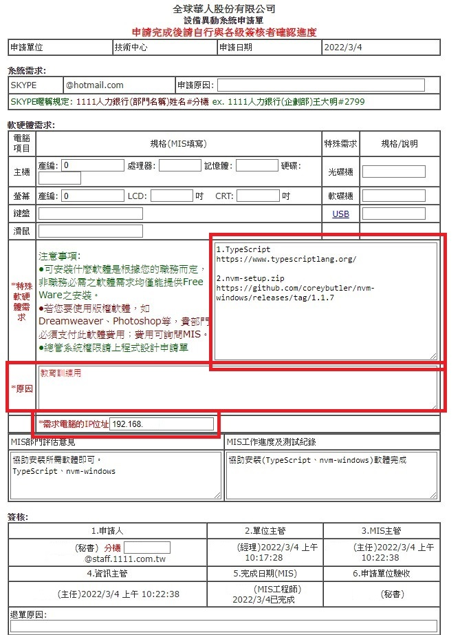請假單
表單範例
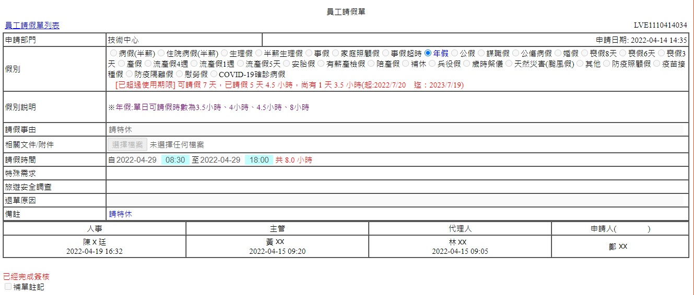注意事項
離職線上申請
用印申請單
- 例行性合約申請: 網路事業群>對外合約用印申請書>例行性合約用印
- 流程: 1.合約需與法務、對方廠商確認無誤後再上用印做一式兩份申請
合約流程
2.申請單夾檔案、請主管簽核後將紙本送至法務部、蓋騎縫章
3.法務與華董線上簽核，大案子需再另約王董、張總簽名
4.送去給阡稽核蓋大小章。
5.與廠商合作一率要簽保密合約(2022/06/07版)NDA(按我下載)
6.NDA不需要回蓋給對方.僅需對方回簽即可。
以上每一個字請認真看 都很重要
介面
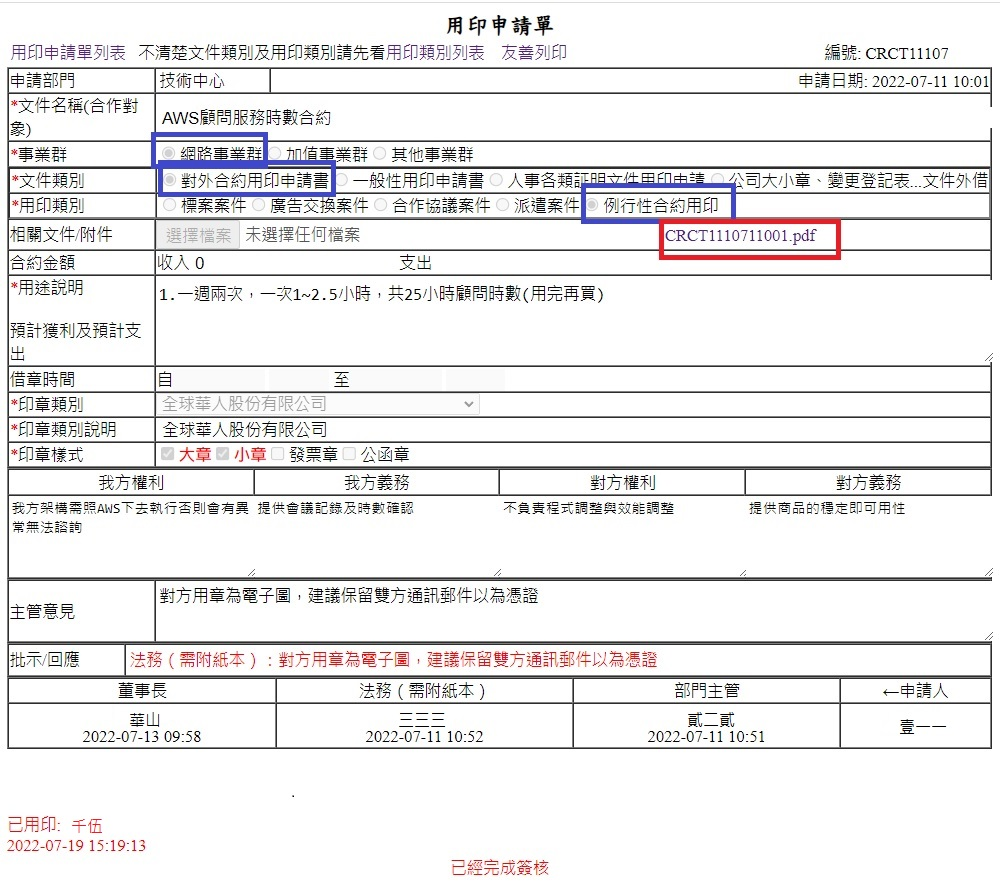 在職、離職、薪資等證明、標案、合約、報價單式合約費用申請單
例行費用
注意事項: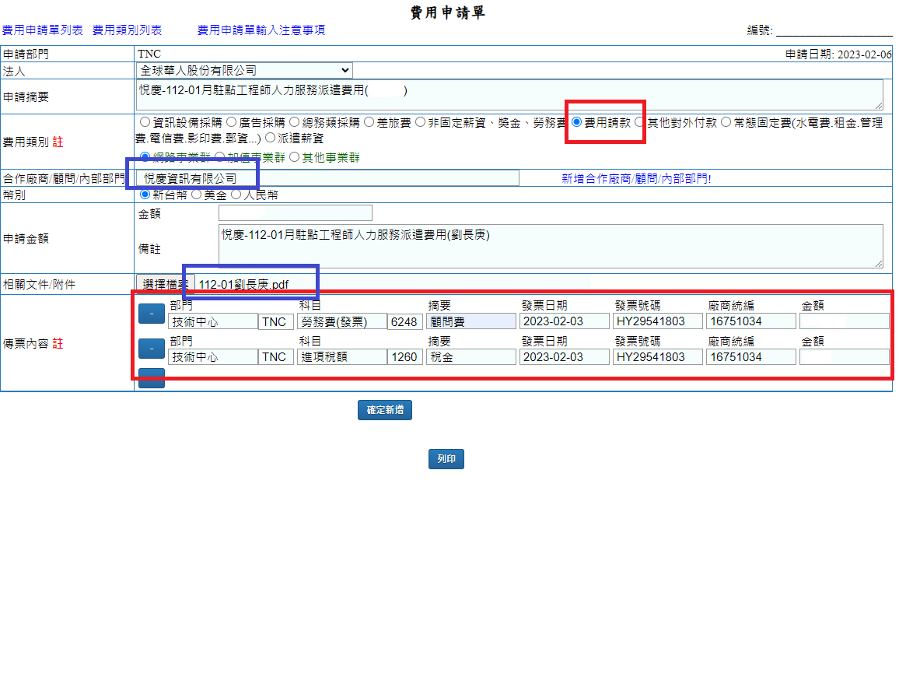
採購流程
採購注意事項:1.採購要有採購計劃(合約、明細、報價單、發票等)
2.付款方式、規格、購買說明要寫清楚
3.既有採購單就要有沖帳(費用請款)單
採購單(範本按我下載)
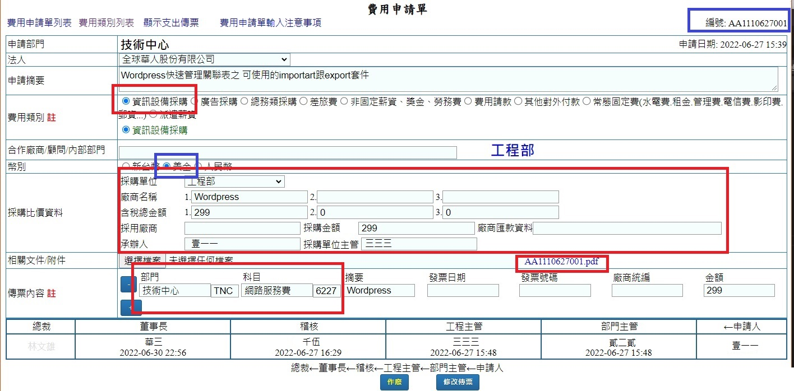
附上採購計畫→主管簽准→採購
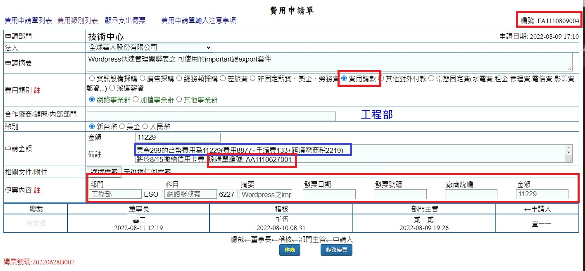
發票來的時後→費用申請→主管簽准
注意事項
程式設計申請單
介面
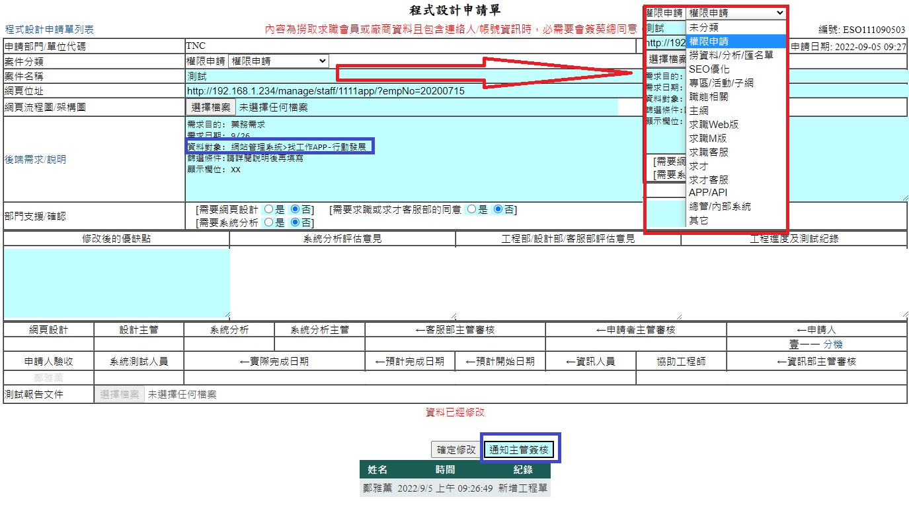什麼時候會填
提示
Google Analytics申請
GIT申請
【本區只教基本權限、其他需求請參考上方本篇】注意事項
***(請全部複製)
EX:
員工編號： G111111
員工姓名：壹一一
系統名稱或路徑/網址：http://192.168.1.158/
使用目的： 申請Git帳號與GitLab權限
信箱名稱:one4@staff.1111.com.tw
FTP申請
注意事項
***(請全部複製)員工編號： G111111
員工姓名：壹一一
測試網址 http://wwwtest.1111.com.tw/
FTP 上傳網址 ftp://192.168.X.234/
使用目的：測試網使用
其他帳號請寄信
MONDAY專案管理
報修單
介面
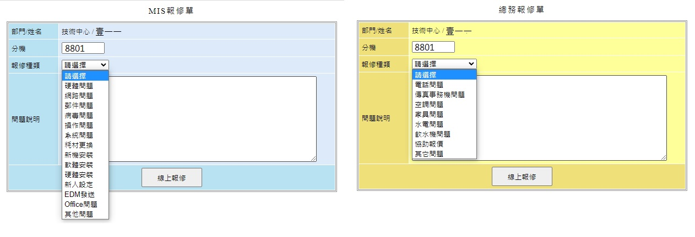 換新硬體需經過"評估"填>報修單;才可申請>設備異動單;報修單
介面
醫生預約
介面
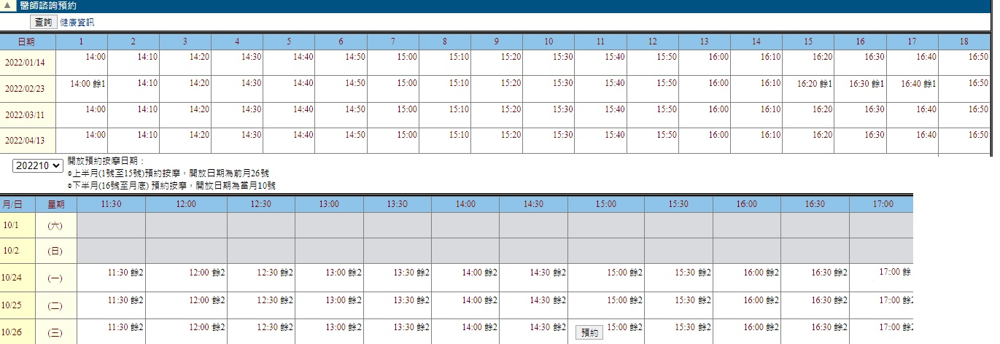按摩預約
介面
團膳供餐週訂單
介面
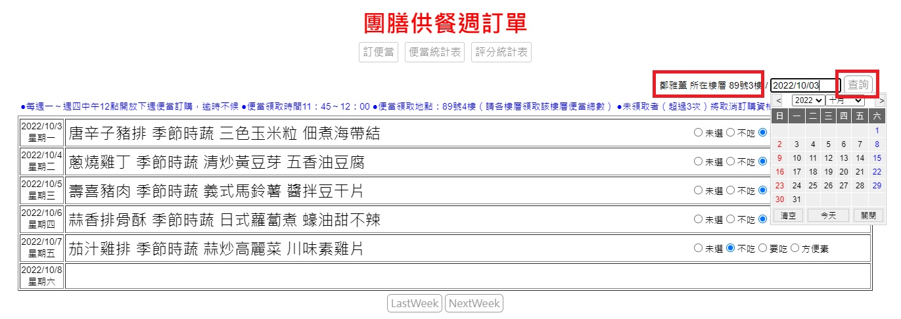注意事項
考勤查詢系統
出勤介面
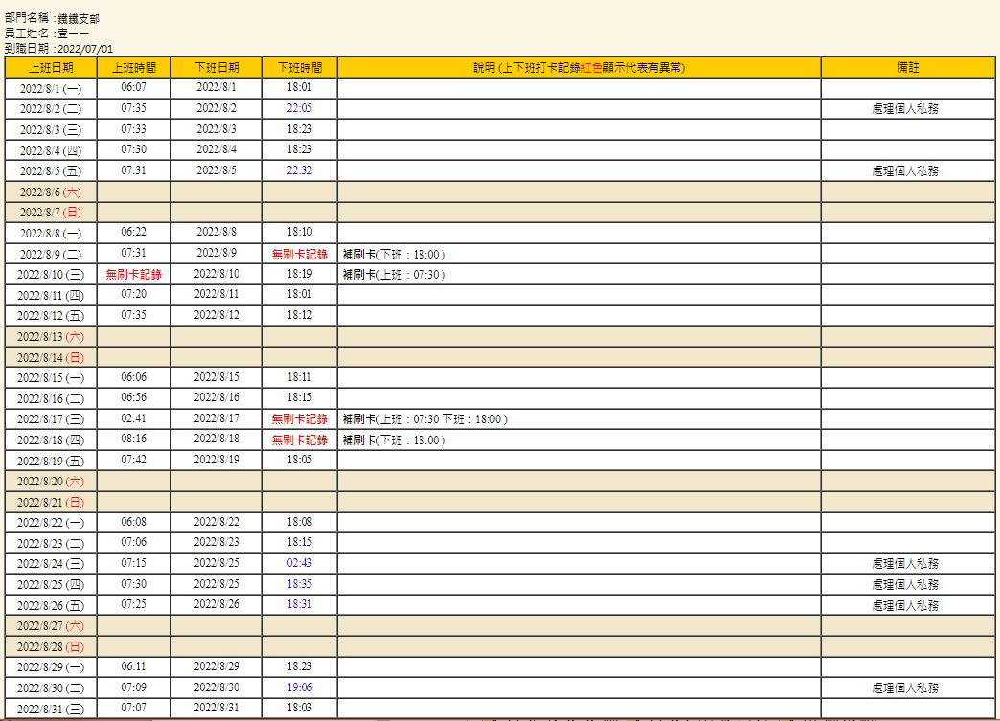注意事項
會議室預約系統
介面
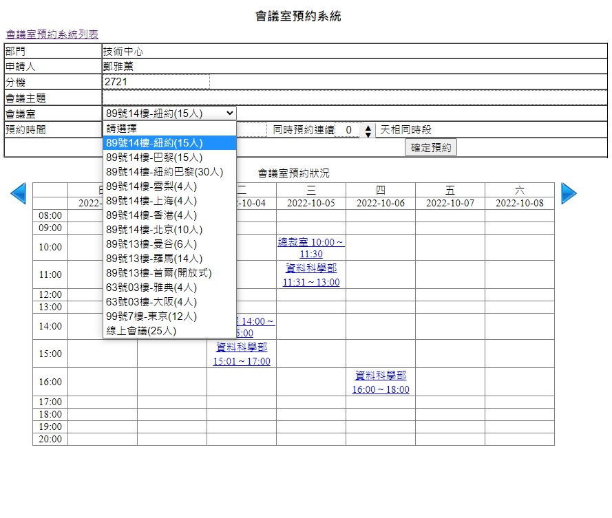月考核表
介面

注意事項
找不到系統?
介面
找不到系統?